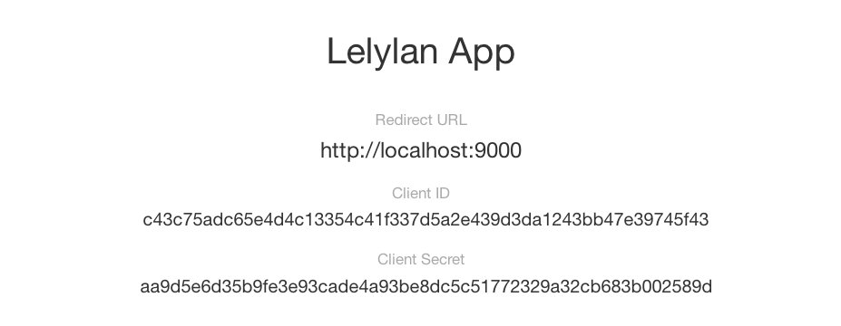
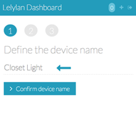
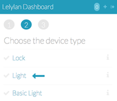
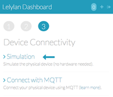

Getting Started
In this section you will learn how to use the device directive to monitor and control
all the devices you have defined in Lelylan.
Setup
To build our app we'll use Yeoman, a collection of tools
and frameworks helping developers to quickly build web applications.
-
yo - perform ripetitive tasks.
-
grunt - build, preview and test your project.
-
bower - solve the frontend package management.
Installation
With a recent version of Node.js installed, install the yo package.
In this way you have Yo, Grunt and Bower and can run them directly from the command-line.
$ npm install -g yo
With Yeoman you can install additional generators with npm. For this tutorial you need
to install the AngularJS generator.
$ npm install -g generator-angular
Create your AngularJS app
To begin, go to the terminal, make a new directory and cd into it.
$ mkdir new-project && cd $_
You can now kick-start your AngularJS app.
$ yo angular
It will also ask you if you would like to include Twitter Bootstrap and other stuff.
Once you've decided, just hit Enter. It will take a while to complete.
To preview what the app looks like run the serve command.
$ grunt serve
The server supports LiveReload, meaning you can fire up a text editor, edit a custom
element and the browser will reload on save.
Install the device directive
Install the device directive using Bower.
$ bower install device-directive-ng --save
Now you have <device> directive and all its dependencies ready to be
used. Restart the server to automatically add the needed javascript files to your index
page.
$ grunt serve
The setup is now completed.
Add the device directive
Inject the device directive into your AngularJS app.js.
// app/scripts/app.js
angular.module('app', ['lelylan.directives.device', ... ])
OAuth 2.0 Server
Lelylan uses an OAuth 2.0 server for authentication and authorization.
Register a new application
setting a name (e.g Lelylan App) and the Redirect URI (e.g. http://localhost:9000).

Add the oauth-ng directive
To get an authorization token you need to use
oauth-ng,
an AngularJS directive for OAuth 2.0 (already installed as dependency).
Open your index page and configure the oauth directive by setting the
client-id and redirect-uri previously defined.
// app/index.html
<oauth
site="http://people.lelylan.com"
client-id="CLIENT_ID"
redirect-uri="REDIRECT_URI"
profile-uri="http://api.lelylan.com/me"
scope="devices">
</oauth>
The oauth directive works just straight when the HTML5 mode is active.
Inject the $locationProvider into a new AngularJS config
block and set the HTML5 mode.
// app/scripts/app.js
.config(function ($locationProvider) {
$locationProvider.html5Mode(true).hashPrefix('!');
});
The oauth directive works also
without HTML5 mode.
Check out the oauth-ng
docs to better understand how OAuth 2.0 works with AngularJS.
Create your first device
If you never used Lelylan before you need to create your first device using
Lelylan Dashboard.
The fastest way to get started is to simulate a device as showed below. In this way
you don't need any hardware (perfect for app development).



Get your devices
To get all your devices you can use the
Lelylan client
for AngularJS (already installed as dependency). Open the controller main.js,
inject the Device service and place the Device#all method.
// app/scripts/controllers/main.js
angular.module('newProjectApp')
.controller('MainCtrl', function ($scope, Device) {
Device.all()
.success(function(data) { $scope.devices = data })
.error(function(data) { $scope.error = 'Unauthorized. Login first.' })
});
This is what happens. You inject the Device service and call
the Device.all() method to get all of your devices and save
them in $scope.devices.
Show your devices
Supposing you have created at least one device with Lelylan
you are ready to show them. Open the main.html
view and list your devices by using the device directive.
This is what happens. You iterate between all devices and show them using the device
directive. To let the directive know which device it has to render you use the attribute
device-json that accepts any valid device representation.
See the configurations section to see the
accepted attributes.
You're done!
Open your index page, click to the Login link and authorize your application
to get a new access token. You are now ready to monitor and control all your
devices.